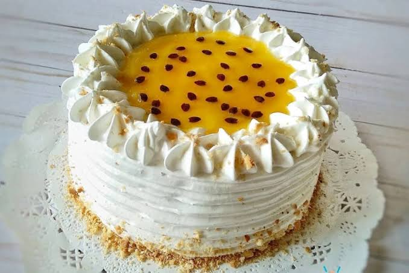
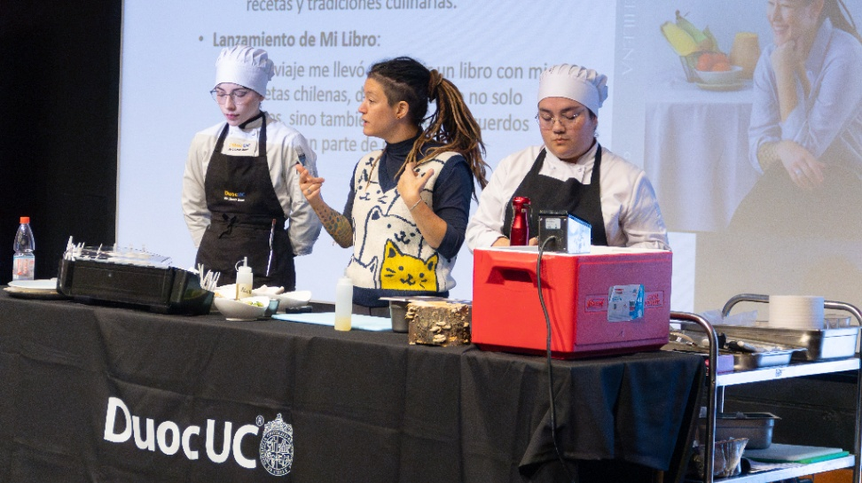
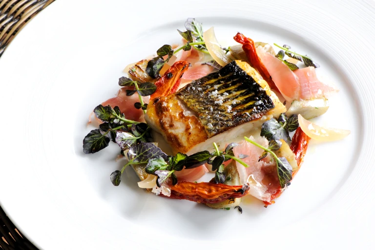

Recetas
La mejor torta tropical: Maracuyá
Mil Sabores
Aprende paso a paso cómo lograr un bizcocho esponjoso y un relleno brillante con esta receta infalible.
Leer artículoDescubre noticias sobre repostería, recetas y los mejores consejos de gastronomía.

Mil Sabores
Aprende paso a paso cómo lograr un bizcocho esponjoso y un relleno brillante con esta receta infalible.
Leer artículo
DuocUC
Descubre los datelles del evento progatonizado por Duoc UC y Carolina Bazán.
Leer artículo
Great British Chef
Directamente desde los mejores restarurantes del mundo a tu casa, sigue los consejos y recetas Michelin Star.
Leer artículo